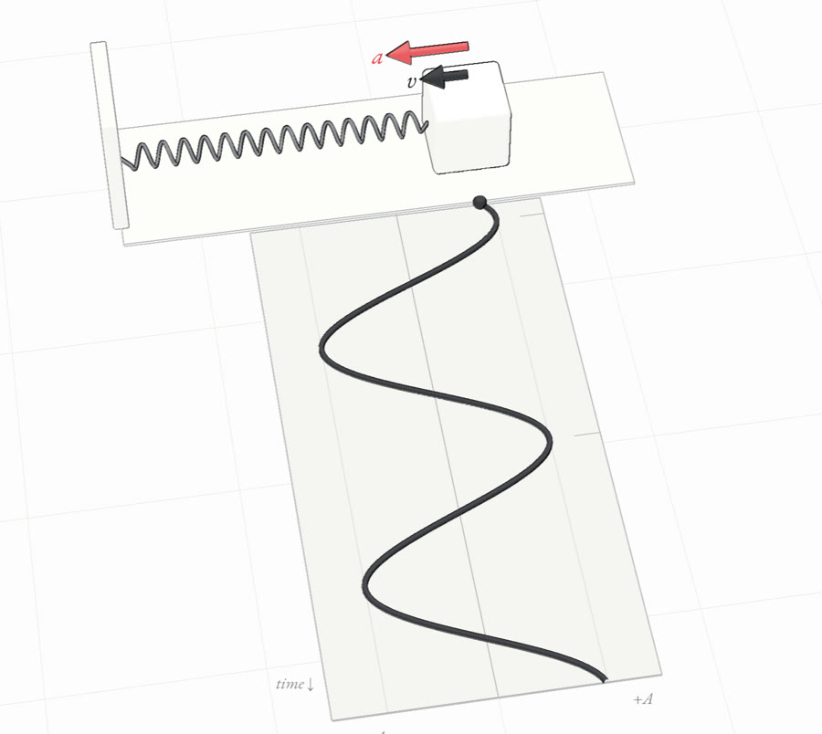
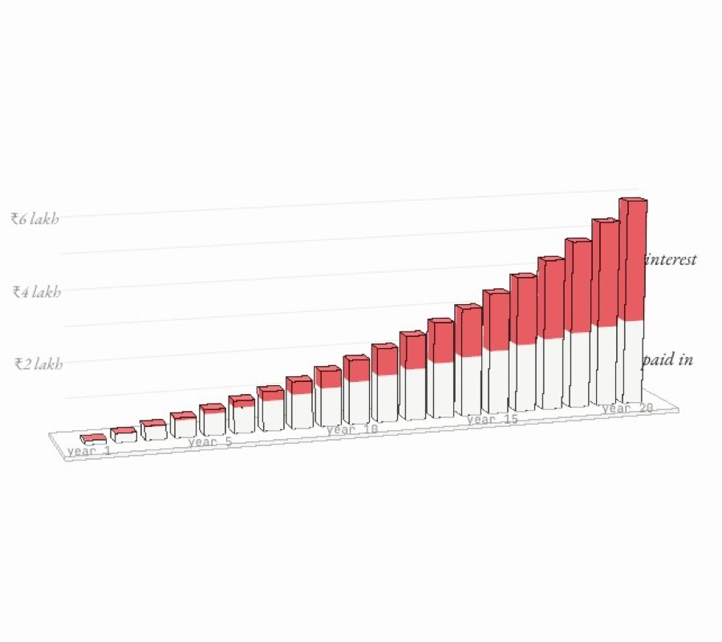
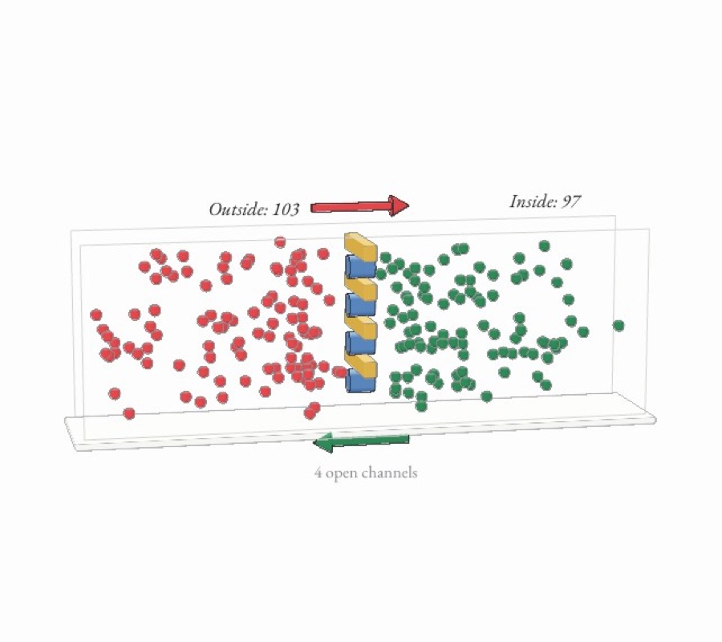

18 chapters
Physics
mechanics, electricity and magnetism
8 chapters
Mathematics
trigonometry, calculus, linear algebra, differential equations and Fourier series
5 figures
Statistics
probability, sampling and inference
9 figures
Critical Thinking
arguments, denominators, causal inference and evidence
6 chapters
Chemistry
orbitals, molecules, reactions and energy
5 figures
Economics
money, markets and growth
7 figures
Biology
cells, molecules and living machines